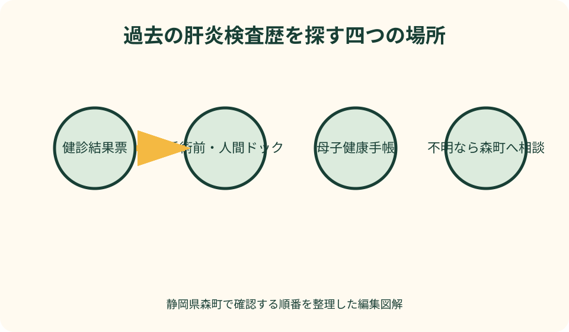
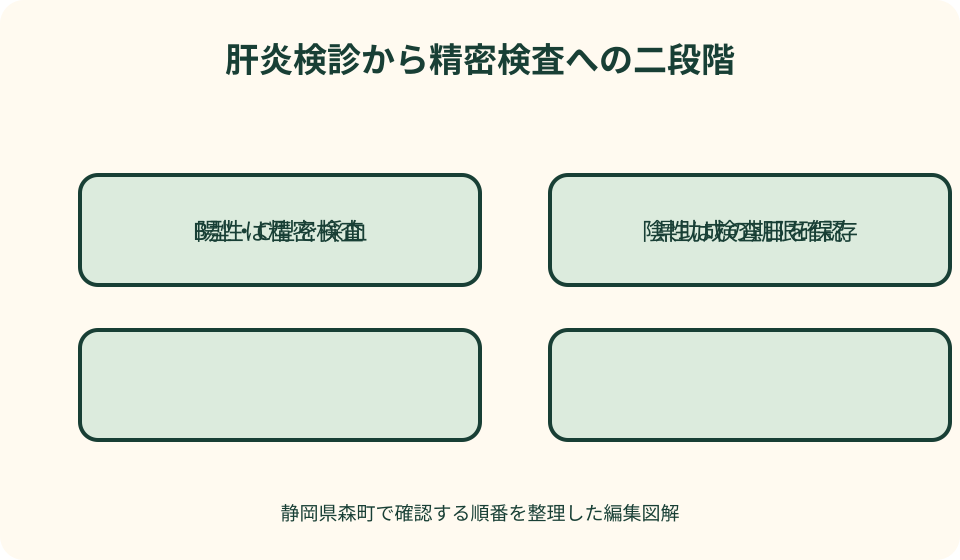

健康・医療・保険｜最終確認 2026-08-10
静岡県森町の肝炎ウイルス検診｜B型・C型の対象、1,100円、陽性後の受診
肝炎ウイルスは感染しても自覚症状が乏しいことがあり、過去に一度も検査を受けていない人は、症状がない段階で検査歴を確認する意味があります。静岡県森町の2026年度健康診査では、今まで肝炎検査を受けたことがない人を対象に、B型・C型肝炎の血液検査を自己負担1,100円で案内しています。大切なのは、肝機能検査との違いを理解し、結果が陽性なら精密検査へつなぐことです。
最初に結論：未受検なら一度確認する
森町の2026年度健康診査案内では、肝炎ウイルス検診の対象を『今までに肝炎検査を受けたことがない人』としています。毎年繰り返す検診ではなく、まず過去の受検歴を確かめる検査です。
検査内容はB型肝炎とC型肝炎の血液検査で、自己負担額は1,100円です。一般的な健診の採血と同じ日に受けられる場合でも、肝炎ウイルス検診としての申込みが必要か確認します。
厚生労働省は、すべての人が少なくとも一回は肝炎ウイルス検査を受ける必要があるとの考えを示しています。症状がないから不要ではなく、検査歴がないこと自体が確認のきっかけになります。
ただし、検診結果だけで病状や治療の要否を決めるものではありません。陽性や『現在感染している可能性が高い』という結果なら、医療機関で精密検査を受けて医師の説明を聞きます。
森町の2026年度検診内容
町の健康診査一覧では、B型・C型肝炎の血液検査を1,100円で案内しています。年度によって費用や実施場所が変わり得るため、受診する年度の保存版案内を使います。
実施場所は、聖隷の集団健診・個別健診、公立森町病院、森町家庭医療クリニックです。すべての会場が同じ日に受け付けるわけではなく、健診日程と予約枠を確認します。
森町の健康診査は、集団健診と個別健診で期間や予約方法が異なります。春の確認書兼申込書の提出期限を過ぎていても、追加申込みが可能かを健康こども課健康づくり係へ尋ねてください。
森町国保か、勤務先保険か、後期高齢者医療かによって基本健診の種類は変わりますが、町の肝炎ウイルス検診の対象判定は過去の肝炎検査歴が中心です。加入保険を伝えた上で申込み可否を確認します。
肝機能検査と肝炎ウイルス検査は別
健康診断でAST、ALT、γ-GTPなどを測ったことがあっても、それだけでB型・C型肝炎ウイルスの感染有無を確認したことにはなりません。肝機能の数値とウイルス検査は目的が違います。
B型では主にHBs抗原、C型ではHCV抗体などを調べ、必要に応じて追加検査へ進みます。検査項目名は結果票で確認し、『採血をしたことがある』だけで受検済みと判断しません。
肝機能値が基準範囲内でも肝炎ウイルス感染を完全には除外できず、反対に肝機能異常があっても原因がB型・C型とは限りません。結果の組合せは医師が判断します。
人間ドック、手術前検査、妊婦健診、献血時などに検査を受けている場合があります。過去の結果票からHBs抗原、HCV抗体という名称と検査日を探します。
過去の受検歴を調べる順番
第一に、手元の健康診断結果、人間ドック結果、入院・手術前の検査説明書を見ます。肝機能ではなく、B型・C型のウイルス検査項目があるかを確認します。
第二に、妊娠経験がある人は母子健康手帳の検査記録を確認します。厚生労働省は、妊婦健診でHBs抗原とHCV抗体の検査が行われ、手帳に検査年月日等の欄があると案内しています。
第三に、かかりつけ医や過去の健診機関へ、記録が残っているかを尋ねます。保存期間が過ぎている場合もあるため、検査したはずという記憶だけで町の対象外と決めません。
どこまで調べても分からない場合は、森町健康こども課へ『結果票がなく、受けたか不明』と伝えます。町が把握する受診記録の範囲と、今回申し込めるかを確認してください。
申込みから受診まで
森町は年度初めに健康診査の確認書兼申込書を送る対象者を案内し、電子申請または返信用封筒での申込みを受け付けています。手元に案内がない人は健康づくり係へ確認します。
希望する健診方式を決めます。集団健診は指定会場・日程で行い、個別健診は実施医療機関へ予約して受けるため、自宅からの距離、通院状況、ほかの検診との組合せで選びます。
予約時には、森町の肝炎ウイルス検診を希望すること、過去に検査を受けていないこと、同日に受ける健診を伝えます。公立森町病院の自費オプションと町検診を混同しないようにします。
受診当日の持ち物は、町から届く受診券や問診票、本人確認に使う物、自己負担金など、予約先の案内で確定します。朝食や服薬の制限は、同時に受ける健診内容に従います。

公立森町病院で受ける場合
公立森町病院は、森町の健康診査・がん検診の実施先として肝炎ウイルス検査を案内しています。町検診として受ける場合は、森町の申込みと病院の予約方法を確認します。
同院には人間ドック等の『気になる健診メニュー』として、自費のHBs抗原・HCV抗体検査もあります。町検診1,100円とは費用体系が異なるため、予約時にどちらを利用するか伝えます。
自費メニューでは追加検査が発生する場合の費用も掲載されています。町検診で追加確認が必要なときの費用や受診先は同じとは限らないため、その場の案内に従います。
通院中の検査と町の検診は、目的と保険適用が異なる場合があります。医師が診療上必要と判断した検査を、安い町検診へ置き換えられると自己判断しないでください。
B型肝炎検査の結果を読む前に
町検診のB型肝炎検査では、HBs抗原が中心となります。陽性という結果は医療機関で確認が必要な情報ですが、検査票だけから肝臓の炎症程度や治療開始を決めることはできません。
陰性であっても、B型肝炎への免疫があることまで同じ検査で示すとは限りません。ワクチン接種や抗体について知りたい場合は、医師へ別の検査が必要か相談します。
過去の感染、現在のウイルス量、肝機能、家族への対応などは追加検査と問診で整理されます。インターネットの数値一覧へ自分の結果を当てはめて診断しないでください。
結果を家族へ伝える範囲は本人が決めます。日常生活での感染リスクを過度に恐れず、血液が関係する具体的な注意を医療者から説明してもらいます。
C型肝炎検査の結果を読む前に
C型肝炎のHCV抗体が陽性でも、過去に感染して自然排除された場合と、現在も感染している場合があります。抗体結果だけで現在の感染を確定しません。
国の実施方法では、抗体価等に応じて核酸増幅検査を組み合わせ、『現在感染している可能性が高い』かを判定します。結果票の表現を読み、精密検査の指示に従います。
陰性結果も、その後の新たな感染機会まで永久に否定するものではありません。医療行為、血液への曝露など心配な出来事が後にあれば、検査時期を医師や保健所へ相談します。
過去にC型肝炎治療でウイルスが排除された人は、町の未受検者向け検診ではなく、主治医による経過観察が重要です。静岡県も治療後の定期検査を検討するよう案内しています。
結果が陰性だったとき
陰性結果は、今回の検査で対象ウイルスの感染を示す所見がなかったという大切な記録です。検査日、B型・C型それぞれの項目、判定を結果票のまま保管します。
『異常なし』という一言だけ家族へ伝えるより、何の検査をいつ受けたかを健康記録へ残します。将来、町から未受検か尋ねられた際に重複受検を避けられます。
陰性でも肝機能異常や症状がある場合、原因が解決したとは限りません。受診を勧められたときは、B型・C型が陰性だから大丈夫と中断せず、医師の診察を受けます。
ワクチン、感染予防、再検査の必要性は、年齢、職業、家族歴、曝露状況などで変わります。町検診の陰性結果だけから、今後は検査不要と一般化しないでください。
結果が陽性だったとき
陽性結果が届いたら、結果票に記載された受診先や森町健康こども課へ連絡し、医療機関で初回精密検査を受けます。体調がよくても先送りしないことが大切です。
陽性は、検診段階で精密な確認が必要という意味です。肝硬変や肝がんがあると即断するものではなく、ウイルスの状態、肝機能、画像などを医師が総合して判断します。
受診時は、陽性結果通知書、健康保険の資格情報、服薬一覧、過去の肝機能検査を持参します。何を持つかは予約先へ確認し、結果票の原本を失わないよう写しも取ります。
黄疸、強い倦怠感、意識の変化など急な症状がある場合は、町検診の通常連絡を待たず医療機関へ相談します。緊急性は記事では判断できません。
静岡県の初回精密検査費用助成
静岡県は、肝炎ウイルス検査で陽性などと判定された人を対象に、初回精密検査で本人が負担した費用のうち、県が認める範囲を助成しています。自動的に全費用が無料になる制度ではありません。
基本要件には、静岡県内の住民票、医療保険への加入、過去に精密検査を受けていないこと、県のフォローアップへの同意などがあります。町検診の陽性判定から原則1年以内という条件も確認します。
妊婦健診で陽性となった場合は4年以内、手術前検査では2年以内という別の期間が示されています。どの検査で陽性を知ったかによって必要資料と期限が変わります。
必要書類には、請求書、同意書、医療機関の領収書と診療明細書、陽性結果通知、保険資格資料、振込口座資料などがあります。精密検査を受ける前に県ページを確認し、すべて保管します。
精密検査後のフォローアップ
精密検査後は、感染の有無、現在の肝臓の状態、治療または経過観察の必要性を医師から説明してもらいます。『今すぐ治療しない』ことと『今後確認不要』は同じではありません。
静岡県のフォローアップ事業へ同意すると、受診状況の確認や継続受診を支える案内につながります。個人情報の取扱いと連絡方法を読み、納得して参加します。
慢性肝炎、肝硬変、肝がんの治療中または治療後経過観察中など、要件を満たす人には定期検査費用助成もあります。所得要件や年度2回までなど、初回助成とは条件が異なります。
抗ウイルス治療には別の医療費助成制度が関係する場合があります。診断名と治療計画が決まった段階で、主治医、県、保健所へ対象制度を確認します。

家族に感染を広げないための考え方
B型・C型肝炎ウイルスは主に感染者の血液が他人の体内へ入ることで感染します。厚生労働省は、常識的な注意を守れば日常生活で周囲へ感染することはほとんどないと説明しています。
食器の共用、会話、握手などを理由に本人を隔離する必要があると決めつけないでください。一方、かみそり、歯ブラシ、血液が付く可能性のある器具の共用は避けます。
家族の検査やB型肝炎ワクチンが必要かは、感染の種類と関係性によって医師が判断します。陽性結果を受け取った本人だけで結論を背負わず、受診時に家族対応も質問します。
血液が付いた物の処理、けがの手当、性行為、妊娠・出産に関する具体的な注意は医療者へ相談します。恐怖をあおる一般論より、本人の検査結果に合った説明を優先します。
森町で受診しやすい日程を組む
森町の集団健診は三倉総合センターや総合体育館などで実施される日があり、個別健診は公立森町病院等で期間を設けて行われます。最新日程は2026年度案内で確認します。
三倉・天方など北部から受診する人は、採血後の体調と帰路も考えて、家族送迎や公共交通を準備します。同じ日に多数の検診を詰め込むかは体調と予約先へ相談します。
かかりつけ医で治療中なら、町検診を追加する前に過去の肝炎検査歴を尋ねられます。診療記録に結果があれば、不要な重複検査を避けられる可能性があります。
仕事や介護で指定日に動けない場合は、集団健診だけで諦めず、個別健診の期間と空き枠を確認します。町検診の申込みが間に合わない場合の代替も健康づくり係へ尋ねます。
肝炎ウイルス検診の良い点
良い点は、自覚症状が乏しい段階でも、採血によってB型・C型肝炎ウイルスの手がかりを得られることです。未受検者が一度確認する入口として実用的です。
森町では、ほかの健康診査と同じ会場・医療機関で受けられるため、通院の回数を抑えやすい利点があります。申込み時に同日実施が可能かを確認できます。
自己負担1,100円と年度案内に明記されており、事前に費用を準備できます。公立森町病院の自費検査との違いも、金額と申込経路から見分けられます。
陽性後には静岡県の初回精密検査助成とフォローアップが用意され、検診から受診へつなぐ道があります。結果票を保管し、期限内に動けば費用面の支援も確認できます。
森町の案内に注文したい点
注文したい点は、2026年度の健康診査PDFには対象、費用、場所が載る一方、肝炎検診だけを探す人向けの独立ページが見当たりにくいことです。申込期限後の相談方法も明示してほしいところです。
『今までに肝炎検査を受けたことがない人』という対象は明快ですが、受検歴が不明な人がどう照会するかまでは分かりません。町が確認できる記録範囲と相談先があると動きやすくなります。
陽性後の県助成は重要ですが、町の健診案内から静岡県の精密検査ページへの導線が弱いと、結果を受け取った人が費用助成を知らないままになります。結果通知への同封を期待します。
公立森町病院には町検診と自費オプションの両方があり、検索だけでは費用差の理由が分かりにくい状態です。予約画面で町受診券の有無を先に選べると取り違えを減らせます。
町検診に間に合わない場合の代案・結論
町の申込みに間に合わない場合は、追加受付や個別健診が可能か健康こども課へ確認します。年度案内の期限を過ぎたことだけで、その年度のすべての選択肢がなくなったと決めないでください。
町検診の対象外なら、保健所、県の委託医療機関、勤務先検診、自費検査など別の検査経路が考えられます。費用、予約、結果後の紹介先を比較し、利用条件を各窓口へ確認します。
過去に陽性と分かっている人や治療歴がある人は、未受検者向け検診を繰り返すより、かかりつけ医や肝疾患専門医療機関へ相談します。必要な検査内容は医師が決めます。
結論として、結果票で過去のHBs抗原・HCV抗体を探し、なければ森町へ申込みを相談します。受診後は陰性結果を保管し、陽性なら精密検査予約と県助成の期限確認を同時に行います。
大石の視点：一度受けた記録を残す
大石の視点では、この検診で最も価値があるのは『受けたはず』を『何年何月にB型・C型を検査した』という記録へ変えることです。結果票があれば家族も重複を避けられます。
健康診断の封筒は毎年増えるため、肝炎ウイルス検査だけを健康記録の索引へ書きます。結果の詳細を家族全員へ公開せず、本人が必要時に取り出せる保管場所を決めます。
陽性を恐れて封筒を開けないことが、最も避けたい中断です。結果を見る日、医療機関へ電話する人、移動を支える人を決めれば、一人で判断を抱え込まずに済みます。
森町北部から専門医療機関へ通う必要が出た場合は、診療だけでなく移動時間、薬局、家族送迎を生活予定へ組み込みます。病名を先回りして恐れる前に、精密検査で現在地を確かめます。
相談先を三つに分ける
町検診の対象、申込み、受診券、会場は、森町健康こども課健康づくり係へ確認します。電話番号と受付時間は町公式の2026年度案内で最新情報を見ます。
検査内容、陽性結果、精密検査の予約は医療機関へ相談します。町職員へ診断を求めず、医師へ町検診の結果票を提示して必要な追加検査を確認します。
初回精密検査・定期検査の費用助成とフォローアップは静岡県の肝炎担当窓口へ確認します。陽性となった検査の種類と日付を伝えると、期限と必要書類を絞れます。
問い合わせ記録には、検診申込日、受診日、結果受取日、精密検査予約日、県への申請期限を並べます。電話で聞いた内容は担当機関と確認日も添えます。
一次情報の読み分け
森町の健康診査案内は、2026年度の対象、自己負担、実施場所を確かめる資料です。実際の予約では、申込後に届く案内と医療機関の指示を優先します。
厚生労働省の肝炎ウイルス検査ページは、一度は検査を受ける意義、採血検査、妊婦健診での検査など全国共通の基本を示します。森町の費用や日程は町資料で確認します。
静岡県の重症化予防事業ページは、陽性後の初回精密検査と定期検査の費用助成を確かめる資料です。町検診そのものの1,100円を払い戻す案内ではありません。
公立森町病院のページは、町検診の実施先情報と自費検査の情報が併存します。どの制度で予約したかを明示し、ウェブ掲載額だけで会計を決めつけないでください。
まとめ：検診前・結果後の二段階
検診前は、過去の結果票からHBs抗原とHCV抗体を探し、未受検または不明なら森町健康こども課へ相談します。希望会場、日程、持ち物、1,100円の費用を確認します。
受診時は、町の肝炎ウイルス検診として予約されているかを受付で確かめます。採血後は、結果がいつ、どの方法で届くかを聞いておきます。
結果後は、陰性なら検査日と項目を保管し、陽性などなら医療機関へ精密検査を予約します。県助成を使う可能性に備え、陽性通知、領収書、診療明細を失わないようにします。
肝炎検査に関する記載は2026年8月10日時点の一次情報に基づき、個別の診断や治療を示すものではありません。体調に異変がある場合は検診日を待たず医療機関へ相談し、最新の申込みは森町公式案内を優先してください。
公式情報・確認先
掲載内容は次の一次情報を基礎に整理しました。営業、料金、催し、交通は変わるため、出発前または手続き前にリンク先で最新情報を確認してください。
- 令和8年度森町健康診査のご案内（静岡県森町、2026-08-10確認）
- 大人の健康・検診・相談・健康づくり（静岡県森町、2026-08-10確認）
- 特定フィブリノゲン製剤等によるC型肝炎感染被害者救済法の一部改正（静岡県森町、2026-08-10確認）
- 森町 特定健康診査・がん検診のご案内（公立森町病院、2026-08-10確認）
- 肝炎ウイルス検査について（厚生労働省、2026-08-10確認）
- 肝炎ウイルス検査で陽性といわれたら（静岡県、2026-08-10確認）
- 健康増進事業に基づく肝炎ウイルス検診等の実施（厚生労働省、2026-08-10確認）